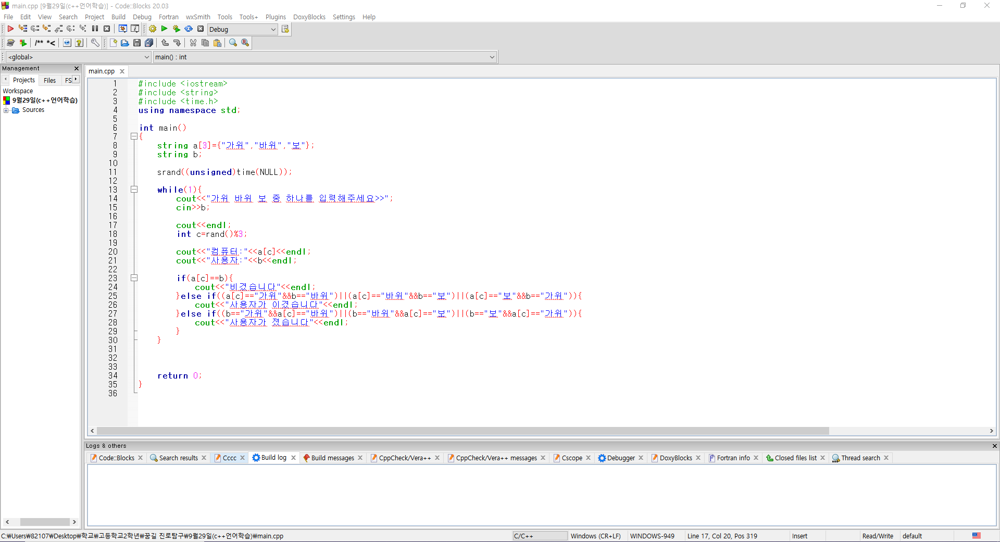
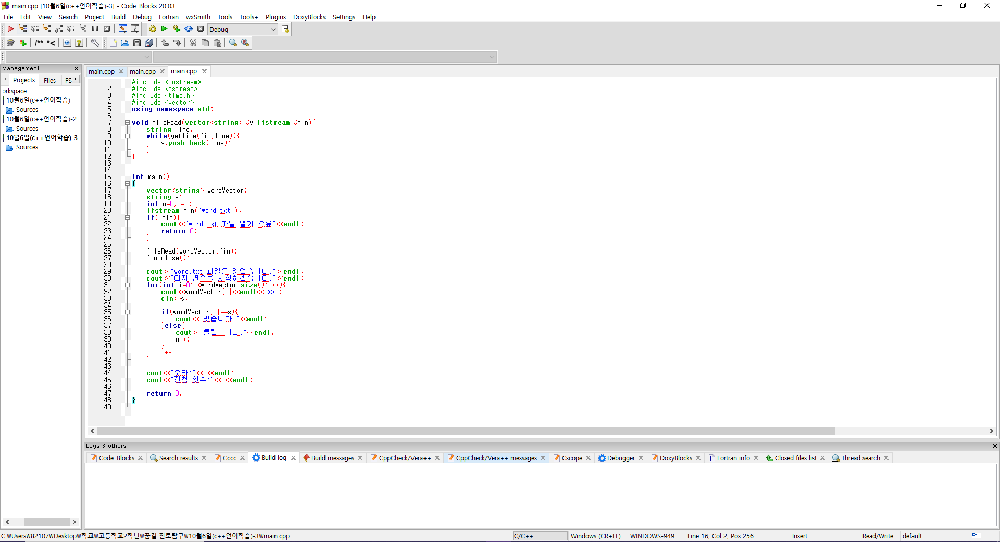
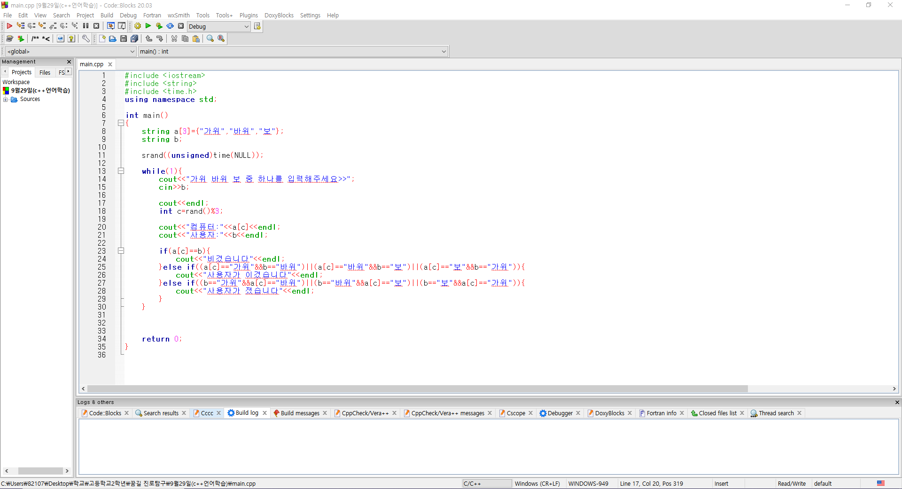
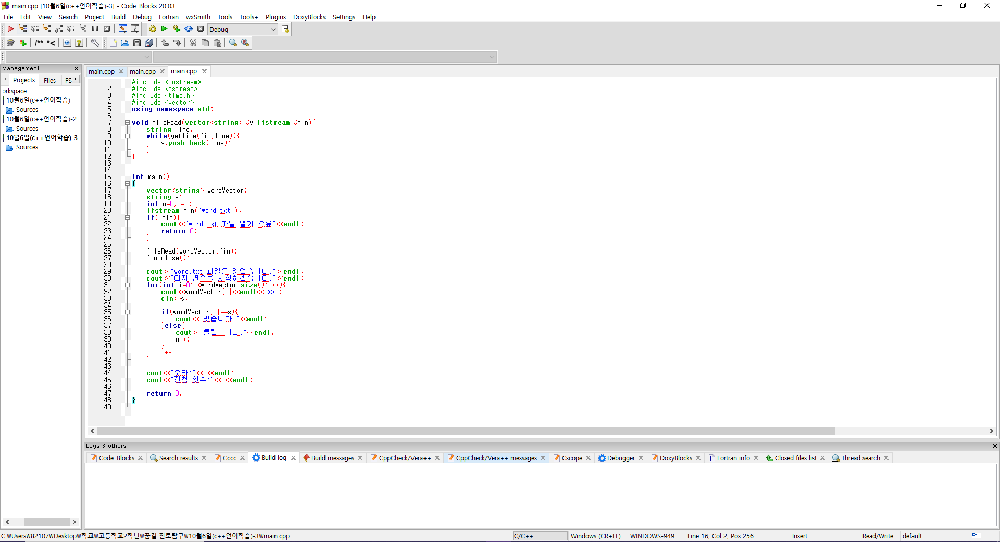

1번째 차시는 c++코드를 학습하였습니다.
c++에서 기본 구조와 정수형 실수형, 문자열 변수들에 대해 학습하였고, 배열과 함수, 반복문과 난수 발생 함수에 대해 간단한 프로그램을 작성하였다.
그리고 string함수를 이용하여 가위, 바위, 보 게임 제작과 c++의 class함수를 사용하여 원의 반지름을 이용하여,
넓이를 출력하는 프로그램을 제작하여 class험수의 작동 과정과 출력 방식을 알아보았습니다.
언어를 먼저 공부한 것이 아닌 프로그래밍 과정을 보며 언어를 학습하여 습득하는데 있어 어려움을 겪었지만,
모르는 것에 대해 다시 복습하고 쉬는 시간에 내용을 정리하는 등의 활동을 통해 어려움을 극복하려 노력했습니다.
파이썬 또는 c언어와의 차이점을 알 수 있어서 좋았고, 이를 비교하며 수업하는 방식에 흥미를 느꼈습니다.